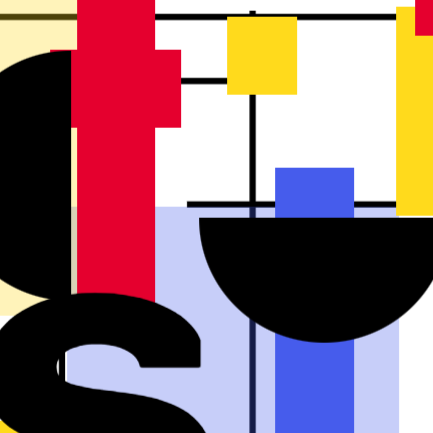
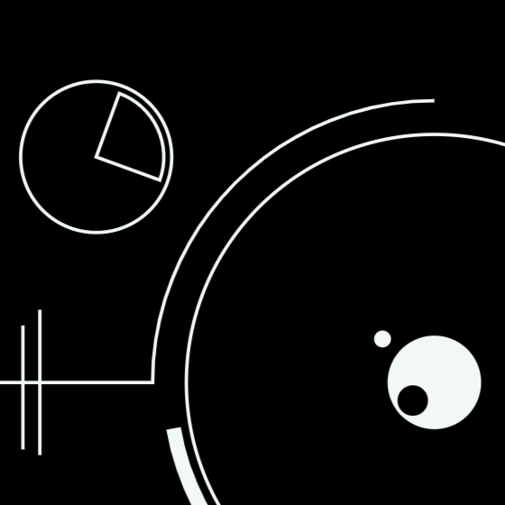
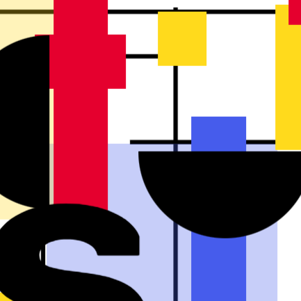
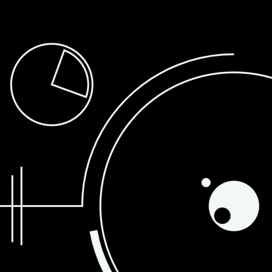

Le Bauhaus est considéré comme le mouvement d'art, d'architecture et de design le plus influent de
l'histoire.
Né dans les années 20, il se caractérise par une esthétique simple et minimaliste. En contre-courant avec
les pratiques de l’époque, l’idée était de
supprimer tout
ornement,
de penser sobre et fonctionnel avant tout. Avec le Bauhaus, c'est la fonction qui fait la forme.
Pianotez sur les touches du clavier pour composer une création inspirée de ce style !

 


